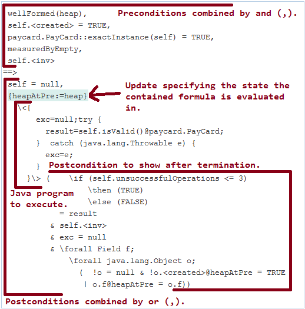
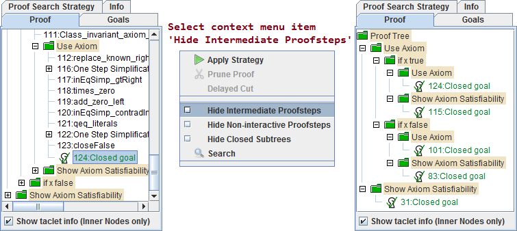

KeY is a semi-automatic verification tool which allows to prove the correctness of sequential Java programs specified with JML.
The relevant knowledge for this evaluation about KeY is explained in the following sections. Please read them carefully before you continue. If you are familiar with KeY, you can skip sections you know well.
To verify if a Java program adheres to its JML specification, KeY translates both into a formula in Java Dynamic Logic. If KeY can prove that the formula is valid, then the program respects its specification.
For the actual verification, KeY uses a Gentzen-style sequent calculus. The main data structure of such a calculus is a sequent as explained in section 2 Java Dynamic Logic. The verification process (construction of a proof) consists of the application of syntactical rules that transform one sequent into a set of other sequents. This forms a so called proof tree. The leaves of the proof tree on which no rule is applied yet are called goals. A proof is successful, if all leaves of the proof tree evaluate to true. A successful proof is called closed.
Rules can be applied interactively or automatically. In many cases the automatic proof search (implemented by a so called strategy) is powerful enough to close a proof automatically, if program and specification are correct. If the automatic proof search stops and the current proof is still open, the reason can be manyfold, for instance:
The following figure shows how a sequent in Java Dynamic Logic looks like:

A sequent consists of first-order formulas and can be read as:
Assuming that all formulas on the left side of the implication ==> hold, at least one formula on the right side needs to hold.
The left side contains typically preconditions to assume while the right side contains postconditions to be proven.
Within a sequent, the Java program to execute is contained in a diamond or box modality.
A diamond modality \<javaProgram\> postcondition evaluates to true, if the java program terminates in a state which fulfills the postcondition.
The box modality \[javaProgram\] postcondition evaluates additionally to true, if the java program never terminates or terminates with a thrown exception.
Rules applied on a modality symbolically execute the first active Java statement.
Resulting state changes are represented by so called updates of the form {variable_1 := value_1 || ... || variable_n := value_n} formula.
The meaning is that the formula is evaluated in a state where each variable has the specified value.
The heap containing Java objects is represented in a sequent by a variable named heap.
Modifications on a heap in the form of created objects or changed instance fields are listed in square brackets and applied in order.
Consider for instance the following update:
The right part of the update creates a new object
{heapAtPre:=heap || heap:=heap[create(newObj)]
[newObj.intField := 42]}newObj on the heap and sets then its instance field intField to 42.
The left part of the update stores the initial state of the heap (before newObj is created) in variable heapAtPre.
After application of a method contract or a loop invariant the anon(locations, anotherHeap) function is used to assign fresh symbolic values to all specified locations (see assignable clause in JML).
Technically, the locations are assigned with the value they have in anotherHeap. The other heap is in this evaluation always a fresh heap nothing is known about.
Field accesses within formulas either specify the target heap or target the heap named heap otherwise.
The following formula for instance says that in the state specified by the update the value of intField
in heap heapAtPre is the same as on the default heap heap.
{heapAtPre:=heap}
(obj.intField@heapAtPre = obj.intField);
KeY is launched in a separate shell and is not integrated in Eclipse. The user interface is separated into three parts:

You can easily switch to goals by:
You can hide intermediate proofsteps via context menu item Hide intermediate Proofsteps in tab Proof.
KeY lists all applied contracts during prove by selecting main menu item 'Proof, Show Used Contracs'.